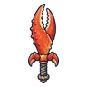

ปูก้ามโตลำธาร
มอนธาตุน้ำ Lv 14–28
เจอที่
| แมพ | โซน | Lv | ภูมิภาค |
|---|---|---|---|
| บึงกบลำธารใส | 16–24 | ป่ากองไฟ | |
| บึงกบลำธารใส | บึงบัวใหญ่ | 20–24 | ป่ากองไฟ |
| หมู่บ้านเรือนเสาร้าง | 22–28 | ป่ากองไฟ | |
| เขื่อนบีเวอร์ร้าง | 14–24 | ป่ากองไฟ | |
| เขื่อนบีเวอร์ร้าง | เขื่อนท่อนไม้ใหญ่ | 21–24 | ป่ากองไฟ |
| ดงกกท่วมหัว | 14–24 | ป่ากองไฟ | |
| ดงกกท่วมหัว | ซุ้มซ่อนล่าเป็ด | 21–24 | ป่ากองไฟ |
| กระท่อมรมควันปลาไหล | 14–24 | ป่ากองไฟ | |
| กระท่อมรมควันปลาไหล | โรงรมควันริมน้ำ | 21–24 | ป่ากองไฟ |
ค่าสถานะตามเลเวล
| Lv | HP | ATK | DEF | MDEF | EXP | Job |
|---|---|---|---|---|---|---|
| 14 | 1,736 | 31–46 | 8 | 2 | 22 | 14 |
| 21 | 2,196 | 39–59 | 13 | 3 | 30 | 20 |
| 28 | 2,666 | 47–69 | 17 | 4 | 38 | 25 |
ตีด้วยธาตุไหนดี
แรงขึ้น: ลม ×1.75
เบาลง: ไฟ ×0.5 น้ำ ×0.25
วัตถุดิบที่ดรอป
| ของ | โอกาส | |
|---|---|---|
| ก้ามปูลำธาร | 58% | 1 ชิ้น (15% ได้ 2) |
อุปกรณ์ที่ดรอป (9)
| ของ | โอกาส |
|---|---|
| 0.25% | |
| 0.25% | |
| 0.25% | |
| 0.25% | |
| เกราะกระดองปู (เกราะอก) | 0.15% |
| เกราะกระดองปู (สนับขา + รองเท้าเกราะ) | 0.15% |
| 0.06% | |
 ดาบก้ามปู | 0.06% |
| เกราะกระดองปู (กำไลก้ามปู) | 0.05% |
สกิล
หนามสะท้อน (Lv 25+) · หนามสะท้อน (Lv 60+) · ยิงไกล (Lv 60+)